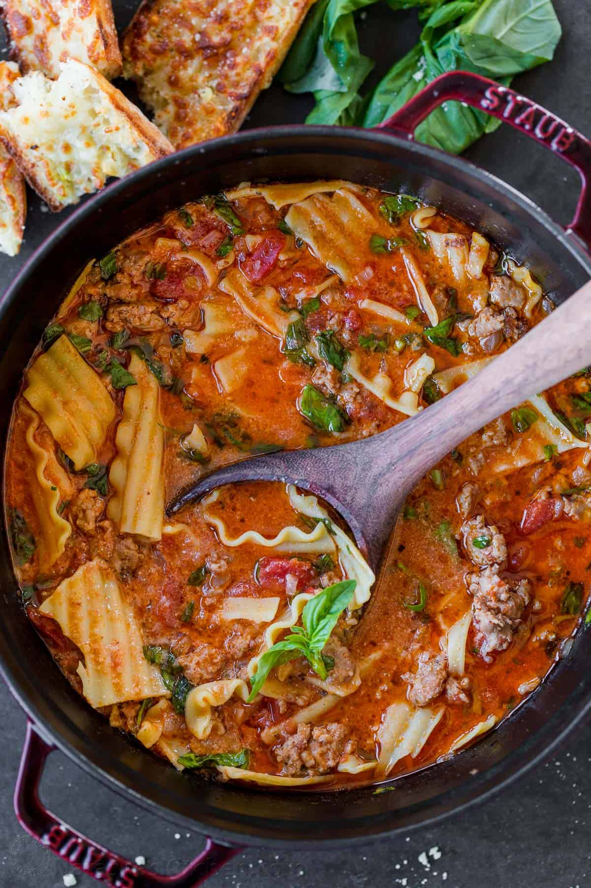

Return to Home Page
Lasagna Soup

Description
This delicious lasagna soup is a new take on the classic lasagna recipe. Enjoy it on a cold evening with your family and friends.
Ingredients
- 6 oz lasagna noodles, broken into pieces
- 1 tbsp oil, avocado or olive oil
- 1 medium onion, chopped
- 1 lb hot or sweet Italian sausage, casings removed
- 2 garlic cloves, chopped
- 1 tsp dried oregano/li>
- 2 tbsp tomato paste
- 32 oz low-sodium broth, (chicken or beef)
- 15 oz canned crushed tomatoes, with their juice
- 1/2 cup fresh basil, chopped
- 1/4 cup parmesan cheese, grated
- 1/2 cup half & half
- Ricotta cheese, for serving
Steps
-
Bring a large pot of salted water to a boil. Add the noodles and cook them for 2 minutes less than advised by the package instructions. Drain the noodles, drizzle them with oil, and set them aside.
-
Place a heavy bottom pot or dutch oven over medium heat, add the sausage, and sautee until cooked through, breaking it up into small pieces with a spatula. Add the onion and cook until it’s translucent. Stir in pressed garlic and oregano and cook for 30 seconds until fragrant.
-
Add tomato paste, broth, and canned tomatoes. Bring to a boil then reduce heat, partially cover, and simmer for 15 minutes.
-
Keeping the heat at a simmer, add in noodles, half and half, parmesan, and basil. Simmer for a few more minutes and season to taste.
-
Serve right away with a spoonful of ricotta cheese and a sprinkle of fresh basil.
Return to the Top of the Page